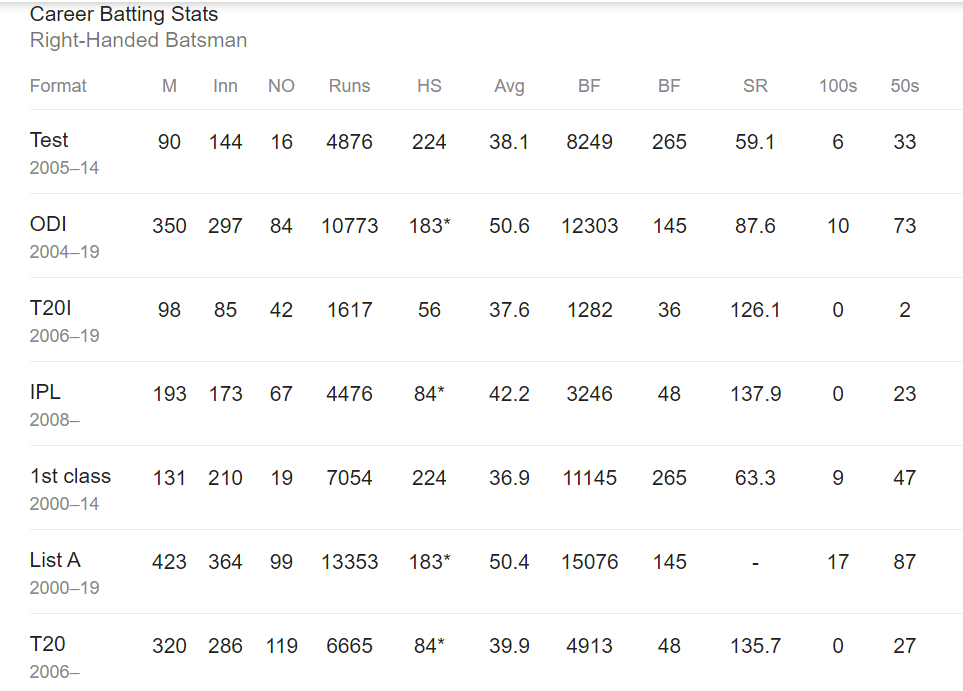
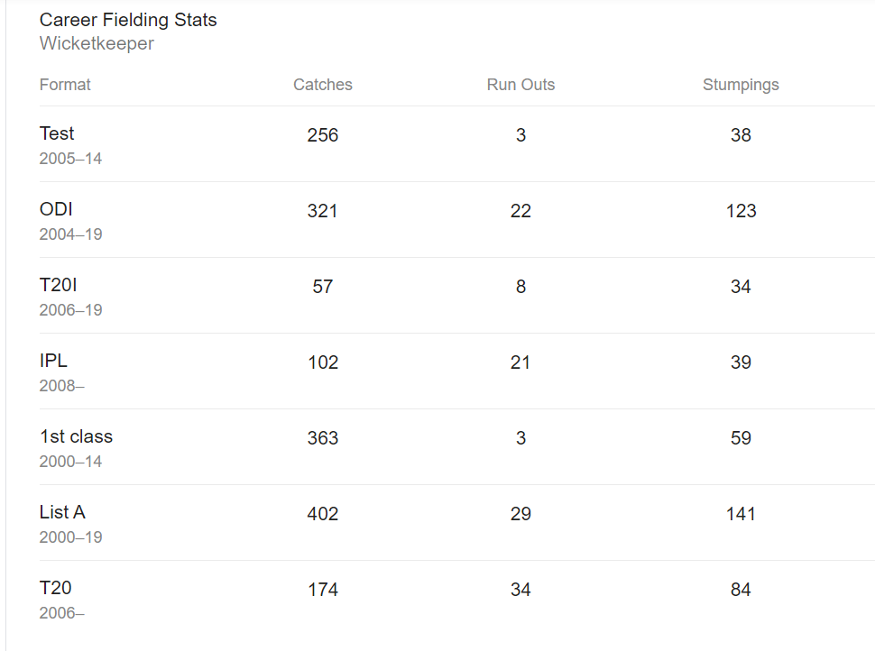

Career Stats
ODI CRICKET
- Third captain (and the first non-Australian) overall to win 100 games.

- Indian to reach 10,000 ODI runs.
- First player to pass 10,000 runs in ODI cricket with having a career average of over 50.
- Dhoni has the fifth highest batting average (51.09) with more than 5,000 runs
- Most career runs in ODI history when batting at number 6 position - 4031
- Only player to score more than one hundred in ODI cricket when batting at number 7 position or lower-2
- Most not outs in ODIs - 82
- First Indian and fifth overall to hit 200 sixes in ODIs.
- Highest score by a wicket-keeper in ODIs - 183* vs SL
- India's highest eighth wicket partnership in ODIs - 100 runs not out, Dhoni and Bhuvneshwar Kumar.
- Most unbeaten innings and highest average in successful ODI run-chases.
- Played the most matches in ODI history as captain who has also served as a wicket-keeper - 200
- Most dismissals in an innings by an Indian Wicket Keeper - 6
- Most dismissals in a career by an Indian Wicket Keeper career - 432
- Most stumpings by any wicket-keeper in an ODI career - 120
- First Indian wicket-keeper to take 300 ODI catches and fourth wicket-keeper in the world to achieve the feat.
T20I CRICKET
- Most wins in T20Is as captain - 41

- Most matches as captain in T20Is - 72
- Most matches in T20I history as both captain and wicket-keeper - 72
- Most consecutive T20I innings without a duck - 84
- Dhoni holds the record for playing the most T20I innings - 76 and
scored the most runs - 1,153 before scoring a fifty.
- Most dismissals as wicket-keeper in T20Is - 87
- Most catches as wicket-keeper in T20Is - 54
- Most stumpings as wicket-keeper in T20Is - 33
- Most catches as wicketkeeper in a T20I inning - 5